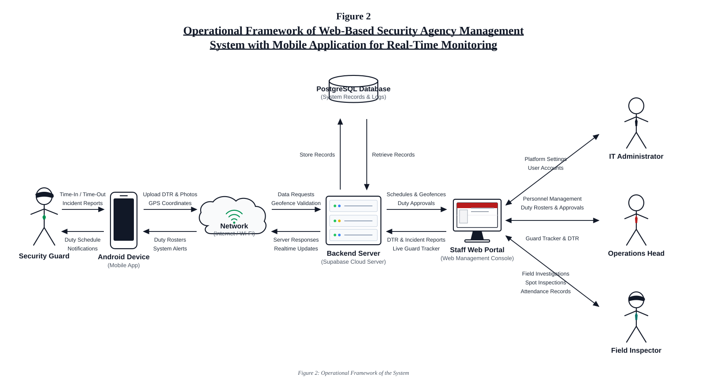

The Operational Framework illustrates how the proposed security agency management system connects different user roles, devices, and software components. The system allows security guards in the field and administrators in the office to interact seamlessly through a secure network and centralized cloud infrastructure.
As shown in Figure 2, security guards use an Android Device running the mobile application. The app allows guards to record their daily attendance through live camera face capture and GPS geofence validation, ensuring that time-in and time-out transactions occur only within their assigned post perimeters. Guards also use the mobile app to view duty schedules, submit duty requests such as absences or shift swaps, and send incident reports with photos. All mobile data is transmitted across the Network (cellular data or Wi-Fi) to the Backend Server powered by Supabase.
The backend server processes system requests, verifies geofence rules, and stores operational records in the PostgreSQL Database, which holds user accounts, shift rosters, attendance logs, GPS history, and incident reports. Administrative personnel access the system through the Staff Web Portal on their office computers. The IT Administrator manages system settings and accounts; the Operations Head creates shift rosters, approves duty requests, monitors active guards on the Guard Tracker map, and exports DTR attendance reports; and the Field Inspector conducts spot inspections, investigates incident reports, and reviews attendance. Through this framework, the system provides real-time monitoring, verified attendance tracking, and organized management of security operations.